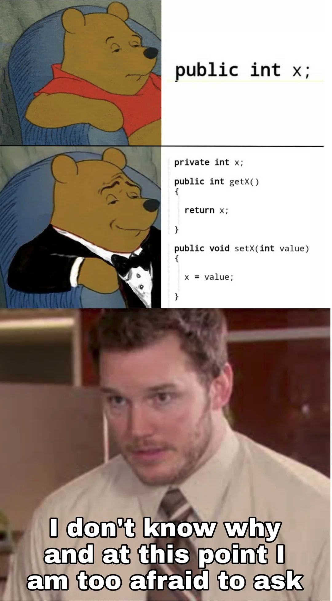
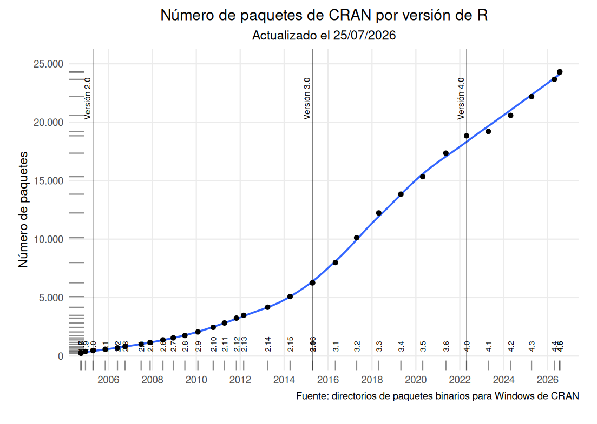
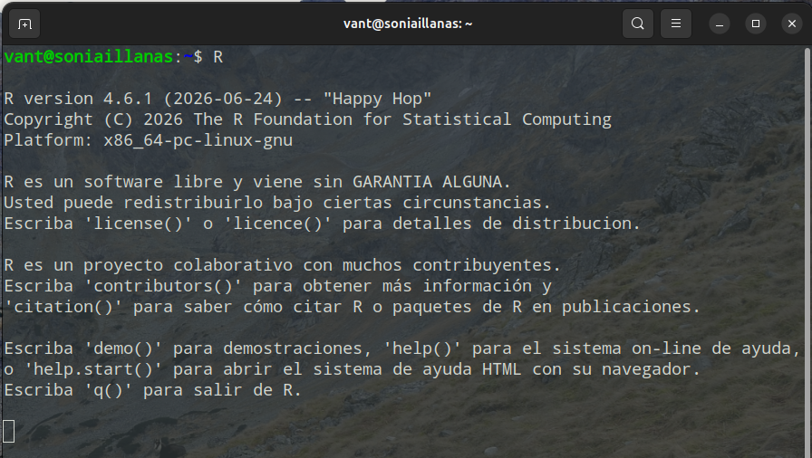

0. Antes de empezar: programación, R y RStudio
0.1. Programar… ¿para qué?
Programar se convierte en una necesidad cuando queremos trabajar de manera más eficiente y debemos repetir una misma tarea múltiples veces.
¿Programarías algo para hacer una suma una vez en tu vida? Probablemente no: no te hace falta. Pero, ¿programarías una operación que tienes que realizar una vez al día y que encadena varios procesos? Aquí es donde la programación adquiere sentido.
Programar consiste en dar a una máquina una serie de instrucciones claras y ordenadas para que realice una función de manera automática. Su gran utilidad radica en la repetibilidad: tareas que nos pueden llevar horas pinchando en distintos menús se pueden automatizar en unas pocas líneas de código.
Además, al quedar escritos todos los pasos realizados, programar permite repetir exactamente el mismo análisis, modificarlo, comprobar cómo se han obtenido los resultados, lo cual facilita que una tarea sea reproducible, modificable y verificable.
La programación tiene infinidad de usos: creación de páginas web, apps, gráficos, presentaciones, informes… En este curso nos vamos a centrar sólo en la manipulación, visualización y análisis estadístico de datos, tareas que forman parte de la denominada ciencia de datos o data science. Usaremos R para abordar problemas que quizás hayáis tratado con otros programas como Excel, Statgraphics, SPSS, SAS, etc.
¿Cómo se programa?
En la práctica, programar implica buscar mucha información en Google (o cualquier otro buscador), en la documentación o en otros recursos que ayuden a encontrar y comprender posibles soluciones.
No consiste en memorizar todas las funciones ni en escribir cientos de líneas sin equivocarse, sino en comprender el problema, dividirlo en pasos, encontrar las herramientas adecuadas y comprobar que la solución funciona: programar es solucionar problemas.
Durante el curso aparecerán errores, como ocurre al aprender cualquier herramienta nueva. Los mensajes de error forman parte del proceso y son útiles: nos indican que algo no ha funcionado y suelen aportar información para localizar el problema.

Actualmente, herramientas de inteligencia artificial como ChatGPT, Gemini, Claude o Copilot que pueden ayudarnos a explicar errores, localizar funciones o proponer soluciones. Son una gran ventaja cuando tenemos los conocimientos necesarios para interpretar y comprobar sus respuestas, pero pueden convertirse en una desventaja sin ese criterio:
1. puedes limitar tu aprendizaje si delegas todo el proceso en la IA,
2. es posible que nunca desarrolles el criterio necesario para saber si lo que está haciendo la IA está bien o mal, o es exactamente lo que tú quieres hacer,
3. que un código se ejecute sin errores no significa necesariamente que el análisis sea correcto.
La IA puede proponerte soluciones que son incorrectas o que no se corresponden exactamente con lo que tú quieres hacer y eso, como profesional, es un riesgo que no deberías correr.Programar requiere tiempo, nadie aprender un idioma en un sólo día, pero al final verás que merece la pena el esfuerzo.
0.2. ¿Qué es R?

- es un lenguaje de programación,
- está basado en un predecesor, S,
- es Free and Open Source Software (FOSS) bajo General Public License (GNU),
- fue desarrollado especialmente para la computación estadística y la representación gráfica de datos,
- proporciona un entorno para realizar cálculos, analizar datos, crear gráficos,
- es usado por estadísticos, académicos y “data scientists” en el mundo entero,
- puede utilizarse en los principales sistemas operativos: Windows, macOS y Linux!
0.3. ¿Por qué R?
R tiene muchas ventajas. Permite comenzar a realizar análisis estadísticos con relativamente pocas instrucciones. Es un lenguaje muy utilizado actualmente, en crecimiento constante, y más “fácil” de aprender para el análisis de datos que otros lenguajes de propósito general y tipado estricto, como Java.
Una de sus principales fortalezas cabe en cuatro letras: CRAN (Comprehensive R Archive Network).
CRAN es una red de servidores web distribuidos a lo largo del mundo encargados de almacenar y distribuir versiones de código y documentación de R idénticas y actualizadas. Desde CRAN podemos descargar R, su documentación y miles de paquetes desarrollados por personas de todo el mundo.

¿Entonces si aprendo R no tengo que aprender otro lenguaje de programación?
No exactamente. R es un medio para un fin. Otros lenguajes pueden adaptarse mejor a otras necesidades que tengas, por ejemplo:
Python es el líder actual en Inteligencia Artificial y entornos de producción. Si vas a dedicarte a otro ámbito (software) o desarrollarte en un entorno GIS probablemente tornes a este lenguaje de programación.
Si vas a usar Google Earth Engine (GEE) el lenguaje en el que vas a tener que escribir en el Code Editor será JavaScript. Este lenguaje, además, domina por completo el desarrollo de páginas web y la interactividad en el navegador.
¿Y por qué no usar entonces otro lenguaje de programación?
No existe un único lenguaje que sea el mejor para todas las tareas.
Python o JavaScript son lenguajes tremendamente populares porque son lenguajes generalistas. Sin embargo, R está especialmente orientado a la manipulación, visualización y análisis directo de datos, donde es extremadamente utilizado y pionero.
¿Entonces lo que aprenda aquí no me va a servir de mucho?
Aprender un primer lenguaje de programación facilita el aprendizaje de los siguientes. Muchos conceptos y formas de razonar son comunes, aunque cada lenguaje tenga su propia sintaxis y sus particularidades.
Cuando tengas que escribir en otros lenguajes tendrás que adaptarte a sus particularidades y reglas. Al igual que al cambiar de idioma, mantenemos la intención de lo que queremos comunicar, pero cambiamos las palabras y las estructuras que utilizamos.
0.4. ¿Qué esperar y qué no esperar de estas prácticas?
¿No saldré siendo experto de R? Efectivamente, estas prácticas NO tienen como objetivo que salgáis siendo expertos de este software.
Cualquier lenguaje de programación que requiere muchas horas (como cuando se aprende cualquier idioma), y mucho trabajo autónomo. Con la introducción que veremos en estas prácticas la intención es que os quitéis el miedo al síndrome de la pantalla en blanco, pero todas las horas que requiere aprender un lenguaje las tenéis que invertir vosotros.

¿Y ahora qué demonios hago yo?”
Os recomendamos que aprovechéis el máster, y todos los trabajos a lo largo de las distintas asignaturas, para poder soltaros en este entorno: R permite hacer casi de todo. Aquí veremos sólo algunas de sus utilidades.
0.5. ¿Cómo usarlo?
R puede utilizarse directamente desde su propia consola, pero habitualmente se trabaja con un entorno de desarrollo integrado o IDE: un software que incluye en una misma interfaz la consola de R y otras herramientas útiles, como consultar los objetos que hemos creado, acceder a la ayuda, editar scripts y visualizar los gráficos generados (‘plots’).
En este curso vamos a utilizar el IDE más común y extendido para R,  .
.
R es el lenguaje y el entorno que ejecuta las instrucciones y realiza los cálculos; RStudio es la interfaz que utilizaremos para escribir, organizar y ejectura el código de R de una manera más cómoda.
RStudio necesita disponer de una instalación previa de R para poder iniciar una sesión de trabajo.
0.6. ¿Dónde conseguirlo?
Primero instala R y luego Rstudio:
RECUERDA
El objetivo de estas prácticas es entender los análisis estadísticos. R es una herramienta, muy útil, pero lo importante es entender la estadística, saber qué quiero y cómo debo hacerlo para poder luego implementarlo.